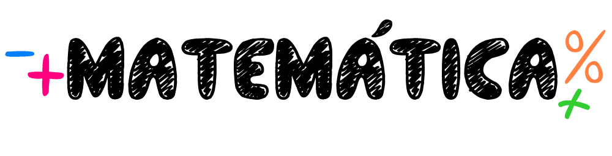
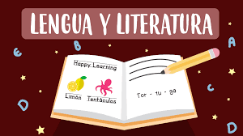
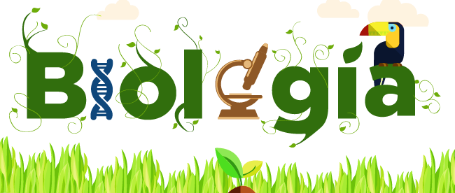
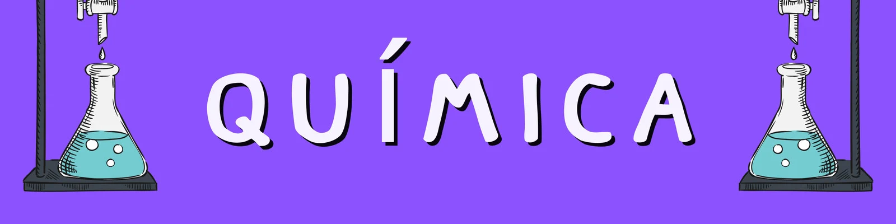

1. Axiomas y Números Reales, Valor Absoluto y Operadores con signo, Exponentes
2. Exponentes y radicales
3. Expresiones Algebraicas, Grado, Coeficiente, Operaciones con Polinomios
4. Productos y coeficientes notables, Teorema del Binomio
5. Factoreo
6. Ecuaciones lineales y cuadráticas
7. Logaritmos
8. Desigualdades
9. valor absoluto
10. Geometria
11. Areas
12. volumen de un cuerpo
13. Igualdad de angulos
14. Conicas
15. Trigonometria, razones trigonometricas
16. Identidades Trigonometricas
17. Estadistica descriptiva y probabilidad
18. Medidas de posicion
19. Probabilidad
20. Definiciones y propiedades de la probabilidad
21. Técnicas de Conteo y Probabilidad, Reglas del producto, Reglas de la suma, Permutaciones

1. Teoria de la literatura, funcion, poetica
2.Caracteristicas de la literatura clasica literaria, epica clasica, tragedia griega
3. Comunicacion Literaria - La edad media sociedad y cultuura
4. Literatura del siglo de oro español y la literatura del manierismo
5. Literatura del romanticismo y literatura del realismo
6. Literatura del siglo XX el teatro
7. Literatura salvadoreña contemporanea
8. La comunicacion humana. Elementos y funciones
9. lenguaje, lengua y habla. fonemas, sonidos y letras
10. Las palabras. estructuras y clases
11. El sintagma. Oracion simple. concordancia entre sujeto y predicado
12. Oracion simple, compuesta y compleja, estructura de la oracion simple
13. Oraciones compuestas: Yuxtapuestas y coordinadas
14. La oración compleja: Subordinadas sustantivas, adjetivas y adverbiales
15. Norma linguistica. Acentuacion
16. Origen del lenguaje, La comunicación versus la escritura, Teoría de la información
17. Modelo de la comunicacion
18. La noticias periodística. El reportaje periodístico
19. Los textos publicitarios
20. La expresión oral y escrita. La argumentación. El editorial periodístico
21. Lenguaje y literatura. La disertación, el debate y la tertulia
22. La ortografía. Las reglas ortográficas

EVOLUCION DE LA VIDA
1. Prólogo e introducción, Teorías sobre el origen de la vida
2. Continuación sobre el origen de la vida
3. Pruebas de la Evolución
4. Características y Funciones de los Seres Vivos
LA CELULA
5. Definición, Características, Formas, Tamaños, Células procarióticas y eucaróticas, Célula animal, Célula vegetal
6. Membrana celular, Citoplasma, Citosol, Cito Esqueleto, Núcleo Celular, Ribosomas, Retículo Endoplasmático, Aparato de Golgi, Lisosoma, Vacuolas, Cloroplasto, Peroxisomas, Mitocondria, Pared Celular
METABOLISMO CELULAR
7. Anabolismo, Catabolismo, Fotosínstesis, Fase clara, Fase oscura
8. Respiración anaerobia, Respiración aerobia
CICLO CELULAR Y DIVISION CELULAR
9. Interfase, División celular, Citocinesis
10. Meiosis, Gametogénesis, Clonación y Células Madre, Bioética
GENÉTICA
11. Leyes mendelianas, Cruce monohíbrido
12. Cruce dihíbrido, Genética humana, Caracteres genéticos humanos, Autosomas y cromosomas sexuales
13. Herencia ligada al sexo, Caracteres ligados al sexo, Tipos sanguíneos, Anormalidades cromosómicas humanas
REINOS DE LA NATURALEZA
14. Sistematica, Taxonomia
15. Dominio Eucariota
16. Clasificación de la zoología, Importancia de la zoología
ECOLOGIA
17. Definición, Historia de surgimiento de ecología, Campo y objeto de estudio, La ecología es una ciencia interdisciplinar, Subdivisiones, Niveles de organización
18. Definición de ecosistema, Componentes del ecosistema, Tipos de ecosistemas, Ciclos biogeoquímicos
19. Poblaciones ecológicas, Comunidades ecológicas
20. Ecosistema

1. Importancia de la quimica
2. division de la quimica
3. fenomenos frecuentes en la naturaleza
4. propiedades de la materia
5. Propiedades quimicas de la materia
6. teoria Atomica
7. Tabla periodica
8. Quimica inorganica
9. Iones Poli Atomicos
10. Sistemas de Nomenclatura
11.Enlace quimico
12. Ecuaciones Quimicas
13. tipos de reacciones